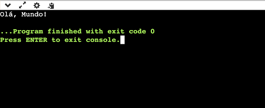
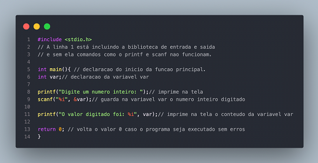
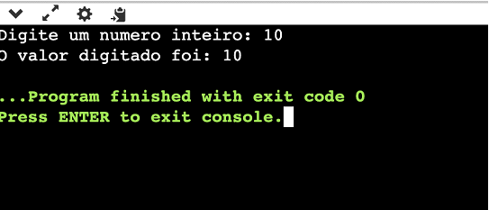
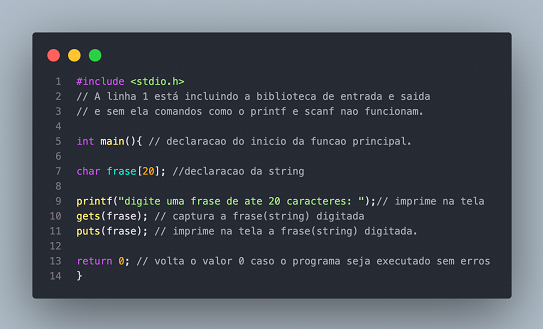
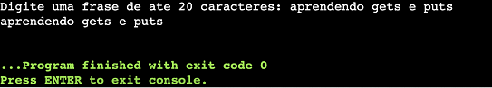

Lógica de Programação
O que é Lógica de Programação? A lógica de programação é o conjunto de regras e técnica que os programadores utilizam para projetar e desenvolver programas de computador. É a habilidade de pensar de forma lógica e estruturada, decompondo um problema complexo em etapas mais simples. Quando precisamos desenvolver um programa para ser executado pelo computador, precisamos deixar bem claro a sequência que deve ser seguida para atingir o resultado esperado. Vamos tentar entender a lógica de programação, fazendo uma receita de bolo: 1. Selecionar os ingredientes da receita; 2. Selecionar tigela; 3. Colocar farinha, de acordo com a medida; 4. Selecionar ovos; 5. Colocar manteiga e açúcar a gosto; 6. Colocar leite; 7. Misturar todos os ingredientes na tigela; 8. Despejar a massa na forma; 9. Levar ao forno; 10. Aguardar 40 minutos; 11. Retirar do forno; 12. Servir o bolo; Cada pessoa define uma sequência de passos para fazer um bolo, podendo incluir ou remover alguns já definidos, essa lógica é aplicada na programação.
Linguagem de Programação C
Em programação, a linguagem é por onde o hardware (máquina) e o programador se comunicam. É um processo formal que funciona por meio de uma série de instruções, símbolos, palavras-chave e regras semânticas. É por meio da linguagem que o programador controla o comportamento físico e lógico de uma máquina. A chamada linguagem de baixo nível tem instruções mais diretas e o sistema é constituído apenas por sequências de 0 e 1 (chamado de código binário). Esse tipo de linguagem requer conhecimento para utilizá-las. A linguagem C é chamada de linguagem nível intermediária, pois combina os elementos das linguagens de alto nível com o funcionalismo da linguagem nível máquina. Com C é possível ter controle exato de como um programa se comporta e dá acesso direto à partes do hardware, como o espaço na memória do computador.
Bibliotecas básicas em C
Em linguagem C, existem várias bibliotecas padrão que fornecem uma vasta gama de funcionalidades. Aqui estão algumas das bibliotecas básicas mais utilizadas: exemplo: stdio.h (Standard Input Output): Fornece funções para entrada e saída, como printf(), scanf(), fprintf(), fscanf(), fgets(), fputs(), fopen(), fclose(), etc. stdlib.h (Standard Library): Fornece funções para alocação de memória, controle de processos, conversão de tipos, e outras operações gerais, como malloc(), free(), atoi(), atof(), exit(), rand(), srand(), etc. Essas bibliotecas são fundamentais para a maioria dos programas em C e oferecem uma base sólida para desenvolvimento de software. Além dessas, existem outras bibliotecas específicas para certas necessidades, como manipulação de arquivos, gráficos, rede, entre outros.
Declaração de variáveis
Conceito de variáveis vimos que dados são armazenados temporariamente em um espaço reservado na memória de um computador para uso, durante a execução do programa. E que podemos dar um nome a este espaço, conhecido como variável. Declarar uma variável significa informar ao computador que reserve um espaço na memória para armazenar um determinado tipo de dado e que este espaço será identificado por um nome. Exemplo em pseudocódigo: x: inteiro Significa que foi reservado na memória um espaço para armazenar um dado do tipo inteiro, cujo nome da nossa variável é x. Em pseudocódigo também podemos utilizar outra notação, como esta: inteiro: x
Comandos de Entrada e Saída
As funções de entrada e saída de utilizados na linguagem C não fazem realmente parte da linguagem, o que existe são com bibliotecas com funções que servem para manipular as transferências de dados entre programa e dispositivo de saída e entrada padrão. A biblioteca deve ser declarada antes da função principal, no caso do código abaixo a biblioteca é a
Execução: O comando printf() vai impriir o que estiver entre as aspas duplas(“), no caso do exemplo, o p rograma imprime: Olá, Mundo!.
scanf(); A função scanf() é utilizada para ler algum dado digitado pelo usuário. Ou seja, sempre que essa função for usada, o programa irá pausar e esperar a entrada de um dado via teclado, que quando inserido será armazenado em uma variável. o exemplo abaixo, por exemplo, guardaria uma variável do tipo inteiro dentro da variável "var".
Execução: O programa pediu para o usuário digitar o número inteiro, após isso, o valor digitado foi guardado na variável “var” e em seguida foi impresso na tela: O valor digitado foi: (número digitado pelo usuário).
gets(); e puts(); A função gets é utilizada para capturar strings e a função “puts” para imprimir a string, como no exemplo abaixo
Execução: O programa pediu para o usuário digitar uma frase de ate 20 caracteres (contando com os espaços), após a frase ser digitada, o programa guardou a frase(string) com a função “gets”, e então, imprimiu na tela utilizando a função “puts”.
(Observação: A função “gets” é pouco utilizada por conta de um problema com falta de segurança, pode ser substituída pela função “fgets”).
Condicional
As estruturas condicionais são usadas para tomar decisões no código com base em certas condições. A mais comum delas é o "if-else". Em C, uma estrutura condicional básica é escrita assim:
#include
int main() {
int numero = 10;
if (numero > 0) {
printf("O número é positivo.\n");
} else if (numero < 0) {
printf("O número é negativo.\n");
} else {
printf("O número é zero.\n");
}
return 0;
}
No exemplo acima, o programa verifica se o valor da variável "numero" é maior, menor ou igual a zero e imprime a mensagem correspondente.
Laços de Repetição
Os laços de repetição são usados para executar um bloco de código várias vezes. Os tipos mais comuns de laços em C são "for", "while" e "do-while".
Um laço "for" é usado quando você sabe antecipadamente quantas vezes quer repetir um bloco de código.
Exemplo:
#include
int main() {
for (int i = 0; i < 5; i++) {
printf("Esta é a iteração %d\n", i);
}
return 0;
}
No exemplo acima, o laço "for" será executado 5 vezes, imprimindo a mensagem com o número da iteração atual.
Um laço "while" é usado quando você deseja repetir um bloco de código enquanto uma condição é verdadeira.
Exemplo:
#include
int main() {
int i = 0;
while (i < 5) {
printf("Esta é a iteração %d\n", i);
i++;
}
return 0;
}
No exemplo acima, o laço "while" continuará executando enquanto a variável "i" for menor que 5.
Um laço "do-while" é semelhante ao "while", mas garante que o bloco de código seja executado pelo menos uma vez.
Exemplo:
#include
int main() {
int i = 0;
do {
printf("Esta é a iteração %d\n", i);
i++;
} while (i < 5);
return 0;
}
No exemplo acima, o laço "do-while" executa o bloco de código e só então verifica a condição, garantindo que o código seja executado pelo menos uma vez.
Laços de Repetição
Conteúdo sobre laços de repetição...
Conhecendo o Arduino
O que é um Arduino ? O Arduino é uma “plataforma de aprendizado”. É um dispositivo composto por placa, microcontrolador ATmega328( ele é capaz de executar operações complexas e controlar vários dispositivos periféricos. ), usado em sistemas autônomos e soluções simples e conexões de entrada e saída, permitindo que seja conectado a computadores, displays e outras interfaces. O Arduino foi criado em 2005, como um dispositivo simples, barato e fácil de ser programado, que aceita uma grande quantidade de periféricos e sensores, projetos dos seus usuários, dos mais diversos tipos. Isso porque o Arduino inaugurou o conceito de hardware livre e todos os seus projetos são de código aberto. # O que é um void setup ? void setup(){ } **é a função de inicialização do Arduino. Ela informa para o Arduino os parâmetros iniciais no qual ele vai trabalhar, isso é equivalente a ligar o computador. # O que é um void loop ? Depois de criar uma função setup(), a qual inicializa e atribui os valores iniciais, a função loop() *faz precisamente o que o seu nome sugere, e repete-se consecutivamente enquanto a placa estiver ligada, permitindo o seu programa mudar e responder a essas mudanças*. # funções do Arduino void - Ela *indica que é esperado que a função não retorne nenhuma informação para a função da qual foi chamada*. -------------------------------------------------------------------------- if - O comando if *checa uma condição e executas o comando a seguir ou um bloco de comandos delimitados por chaves, se a condição é verdadeira ('true')*. -------------------------------------------------------------------------- else - else *permite maior controle sobre o fluxo de código que o comando mais básico if, por permitir múltiplos testes serem agrupados juntos*. Uma cláusula else (se presente) será executada se a condição do comando if resulta em false . -------------------------------------------------------------------------- const int - A palavra-chave const é uma abreviação de constante. *É um qualificador de variáveis que modifica o comportamento da variável, fazendo com que a variável seja de "apenas leitura"*. Isso significa que a variável pode ser usada como qualquer outra variável de seu tipo, mas seu valor não pode ser mudado. -------------------------------------------------------------------------- pinMode - A função pinMode() *é normalmente utilizada dentro da função void setup(); Quando um pino está configurado como saída é possível alterar o estado deste pino*, e o nome da função que realiza a operação de saída digital no Arduino é: digitalWrite(pino, valor); -------------------------------------------------------------------------- digitalRead - A função digitalRead() *é usada para ler o estado lógico de um pino*. Ela é capaz de dizer se a tensão neste pino é alta (~ 5V) ou baixa (~ 0V), ou em outras palavras, dizer se o pino tem estado lógico 1 ou 0 (ou ainda HIGH/LOW). -------------------------------------------------------------------------- digitalWrite - Aciona um valor HIGH ou LOW em um pino digital**. Se o pino for configurado como saída (OUTPUT) com a função pinMode() , sua tensão será acionada para o valor correspondente: 5V (ou 3.3V em placas alimentadas com 3.3V como o DUE) para o valor HIGH , 0V (ou ground) para LOW . [13:59, 06/06/2024] +55 47 9737-5651: Os componentes básicos de um Arduino geralmente incluem: 1. Placa Arduino: O próprio microcontrolador, como Arduino Uno, Nano, Mega, etc. 2. Portas de Entrada/Saída (I/O): Conectores onde você pode conectar sensores, LEDs, motores, etc. 3. Porta USB: Para programação e comunicação com o computador. 4. Microcontrolador: O cérebro do Arduino que executa o código. 5. Conectores de Alimentação: Para conectar a fonte de alimentação, que pode ser USB ou uma fonte externa. 6. Pinos de Alimentação: Para fornecer energia para componentes externos. 7.Botão de Reset: Para reiniciar o programa em execução no Arduino. 8. LEDs: Três LEDs de cores diferentes para representar as luzes do semáforo (vermelho, amarelo, verde). 9. Resistores: Um resistor para cada LED, para limitar a corrente. 10. Protoboard ou Placa de Circuito Impresso: Para montar os componentes. 11. Jumpers: Fios para fazer as conexões entre os componentes.
Componentes básicos do Arduino
Os componentes básicos de um Arduino geralmente incluem: 1. Placa Arduino: O próprio microcontrolador, como Arduino Uno, Nano, Mega, etc. 2. Portas de Entrada/Saída (I/O): Conectores onde você pode conectar sensores, LEDs, motores, etc. 3. Porta USB: Para programação e comunicação com o computador. 4. Microcontrolador: O cérebro do Arduino que executa o código. 5. Conectores de Alimentação: Para conectar a fonte de alimentação, que pode ser USB ou uma fonte externa. 6. Pinos de Alimentação: Para fornecer energia para componentes externos. 7.Botão de Reset: Para reiniciar o programa em execução no Arduino. 8. LEDs: Três LEDs de cores diferentes para representar as luzes do semáforo (vermelho, amarelo, verde). 9. Resistores: Um resistor para cada LED, para limitar a corrente. 10. Protoboard ou Placa de Circuito Impresso: Para montar os componentes. 11. Jumpers: Fios para fazer as conexões entre os componentes.
Simuladores de robótica
Existem várias opções de simuladores disponíveis para quem está interessado em robótica e programação. Para simulações de robótica, o ROS (Sistema Operacional de Robôs) é uma escolha popular para desenvolvedores mais avançados, enquanto o Gazebo é conhecido por suas simulações 3D realistas de ambientes e robôs. Outra opção é o V-REP (CoppeliaSim), que oferece vários recursos para diferentes aplicações de robótica. Quanto à simulação de projetos Arduino, o Tinkercad é uma opção gratuita e fácil de usar. Permite os usuários construam circuitos virtuais e programem usando a linguagem Arduino, sem a necessidade de hardware físico. Além disso, existem emuladores específicos de Arduino, como o SimulIDE e o Proteus. O SimulIDE oferece uma interface gráfica simples para simular circuitos eletrônicos, enquanto o Proteus é uma ferramenta mais avançada e paga, que oferece recursos abrangentes de simulação. Se você está procurando uma maneira de testar o código Arduino na prática, sem depender de hardware físico, uma opção é o emulador Arduino IDE. Este emulador permite que você execute e teste o código Arduino diretamente no seu computador, em um ambiente virtual, simulando o comportamento de um Arduino real.